Image courtesy Lucas Vieira
Two and a half years ago, a single article changed how I would come to spend the majority of my time. Mark Qvist's controversial piece on artifact PV001 - "Abstractions Set in Granite" - landed in my life like a stone thrown into still water. The article sparked something profound within me: within weeks, I found myself immersed in 3D metrology software, studying metrology while writing analytical tools specifically designed for ancient artifacts. This vessel became my new special interest, transforming my free time into a rigorous scientific pursuit spanning 30 months of precision documentation and exploration of geometrical patterns.
This article is different from others on my site - it's deeply personal. Reading Mark's work awakened a curiosity that reshaped my understanding of craftsmanship across millennia. While software like PolyWorks offered initial insights (excellent for industrial objects with existing blueprints), it proved insufficient for studying these ancient artifacts in true detail. I realized measurements and ratio analysis - like those Mark performed - only hold statistical validity when the object itself possesses sufficient precision. This understanding launched my mission: to rigorously document the actual precision capabilities of these vessels before interpreting any geometric patterns.
I will also detail my experience from around two years of assisting Adam Young, and later his "Artifact Foundation" - and the striking misconduct I documented there, while being involved with the project.
It feels fitting that this will be my final article on arcsci.org, a full-circle moment revisiting the very discovery that started it all. But where Mark worked with a structured light scan (with limited interior visibility), we now have PV001's Zeiss CT scan: a very high-resolution dataset revealing the vessel's complete geometry. With sophisticated measuring techniques unavailable to me in 2023, we can finally test whether Mark's findings hold water - or run down the drain.
The most compelling - and controversial - aspect of Mark's analysis was his documentation of π and $\varphi^2$ ratios embedded in the vessel's extremities. If genuine in an authentic ancient artifact, such mathematical precision would fundamentally reshape our understanding of human history. The three interlocking ratios (all following Diameter/Radius formulas) suggested to Mark the existence of a deliberate blueprint predating the vessel's creation - a possibility that demanded verification.
I needed to know: Could these ratios survive rigorous metrological scrutiny? Or were they artifacts of measurement error, scan limitations, or statistical coincidence? Over the past 30 months, I've built analytical frameworks and reporting tools, specifically designed to answer such questions - frameworks that finally allow us to separate genuine ancient precision from modern interpretation bias.
This journey has taught me that studying ancient craftsmanship requires more than measuring tools: it demands humility before the evidence, respect for methodological limitations, and the courage to let data guide conclusions rather than preconceptions. As we examine PV001 through this new lens, we're not just testing Mark's findings, we're participating in archaeology's most fundamental duty: ensuring that our interpretations of the past remain anchored in verifiable reality.
Before we dive into the measurements, I want to be clear: If Mark's π and $\varphi^2$ ratios are genuinely embedded in an authentic artifact, it would represent one of archaeology's most profound discoveries. But extraordinary claims require very solid evidence - and that evidence must withstand the most rigorous metrological scrutiny available. Let's see what the data actually shows.
The superior resolution of our Zeiss CT scan compared to the original structured light data fundamentally changes what we can measure and verify. Consider these critical differences:
CT Scan Mesh Quality (Zeiss)
| Mesh Property | Metric | Imperial |
|---|---|---|
| Number of vertices | 2,446,005 | 2,446,005 |
| Max distance between vertices | 0.270 mm | 0.01062 inch |
| Min distance between vertices | 0.001 mm | 0.00006 inch |
| Median distance between vertices | 0.106 mm | 0.00416 inch |
| Vertices per surface area (aprox.) | 3,300/cm² | 21,290/in² |
Structured Light Mesh Quality (2023)
| Mesh Property | Metric | Imperial |
|---|---|---|
| Number of vertices | 473,864 | 473,864 |
| Max distance between vertices | 0.621 mm | 0.02444 inch |
| Min distance between vertices | 0.000 mm | 0.00001 inch |
| Median distance between vertices | 0.203 mm | 0.00799 inch |
| Vertices per surface area (aprox.) | 943/cm² | 6,083/in² |
The CT scan delivers over five times more vertices with significantly finer resolution (median vertex spacing of 0.106mm vs. 0.203mm), creating a mesh density that's more than three times greater per square centimeter. Most crucially for interior analysis, the CT scan captures the full surface, in contrast to the structured light scan. This will allow us to assess PV001's complete geometry without blind spots. This enhanced fidelity transforms what was previously speculative interpretation into measurable reality.
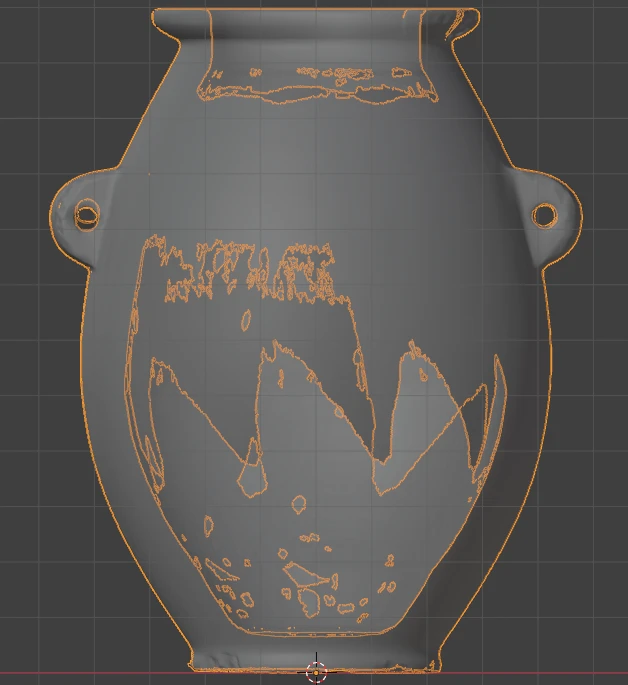
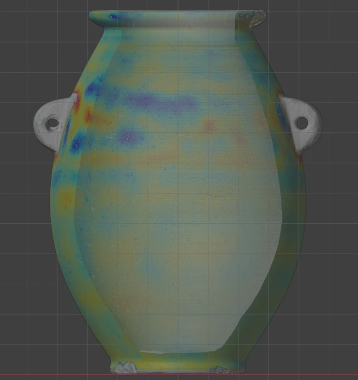
The structured light scan used in 2023 (left) versus today's Zeiss CT scan (right) - revealing previously invisible interior geometry.
Before examining potential mathematical patterns in PV001, we must establish the metrological foundation for any interpretation. For ratio analysis to be scientifically valid, three conditions must be satisfied:
This represents fundamental metrological practice: Measurements from regions exhibiting high variability (large standard deviation, inconsistent circle fits, or poor surface continuity) cannot support reliable ratio analysis. Only where measurements demonstrate high consistency (low statistical dispersion across scan points) can observed ratios be considered potentially intentional rather than artifacts of measurement noise.
Precision assessment conclusion:
PV001 demonstrates exceptional fabrication precision that exceeds all other specimens in our comparative dataset. This high level of surface continuity and geometric consistency provides a solid metrological foundation for subsequent feature measurements.
The following visualization compares surface deviation analyses across representative specimens from each artifact group, the heatmap range differs between plots to enable us to assess the surface texture. Note the difference in the precision of the lip comparing PV001 with MV005:
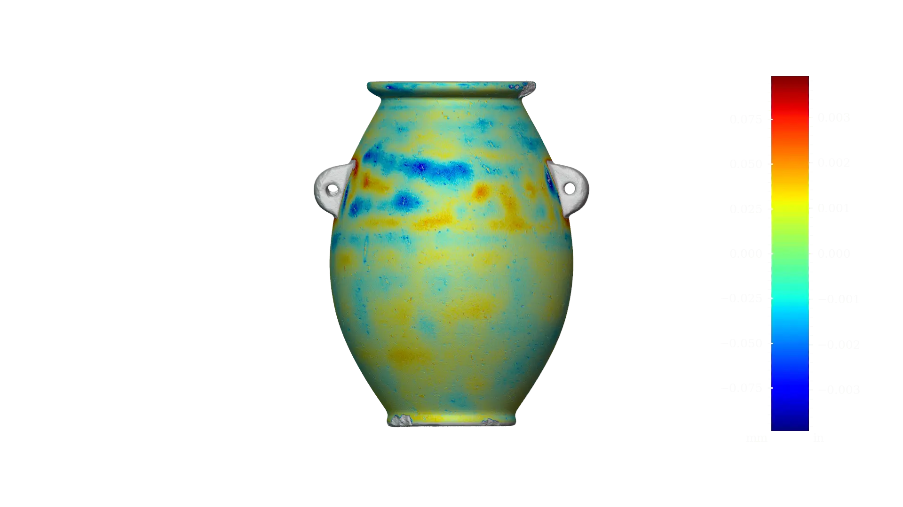
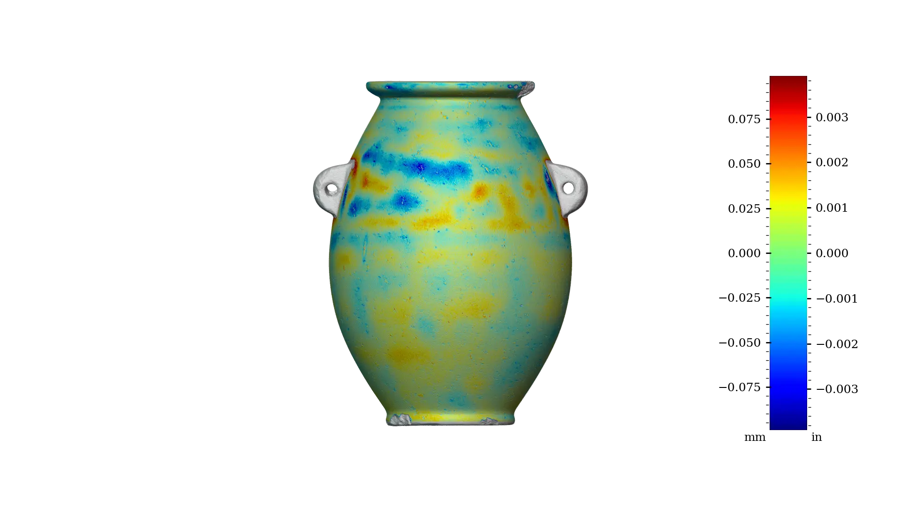
PV001 exterior, private collection of Adam Young - Precision score: 1980 - RMSD: 22 μm | 8.6 thou - Range: 637 μm | 251 thou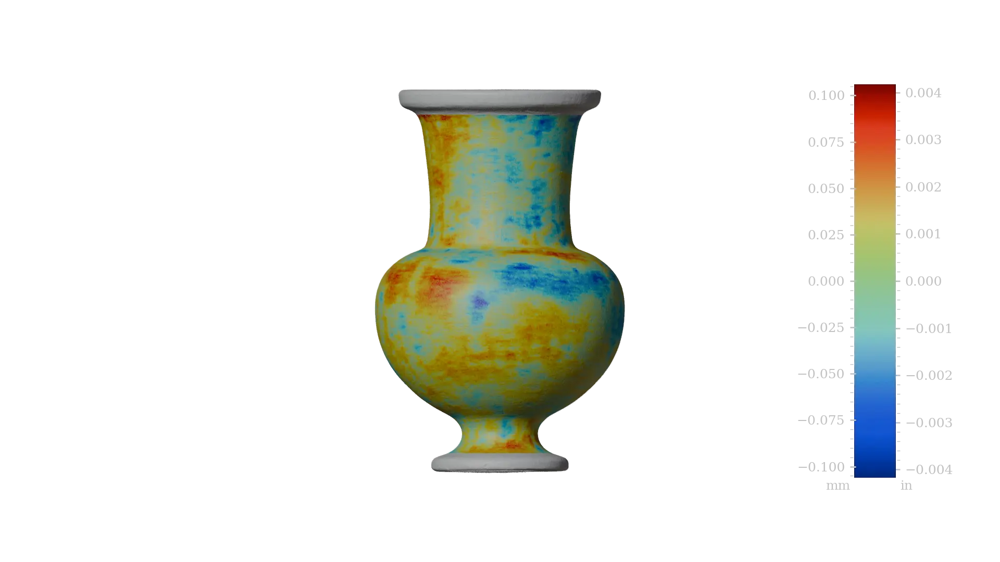
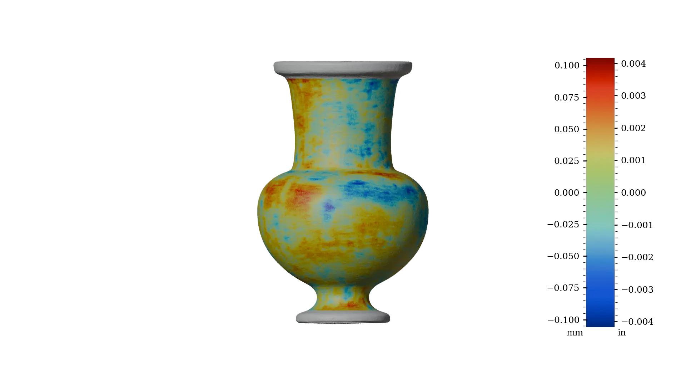
PV003 exterior, private collection of Adam Young - Precision score: 1092 - RMSD: 30 μm | 11.8 thou - Range: 273 μm | 107 thou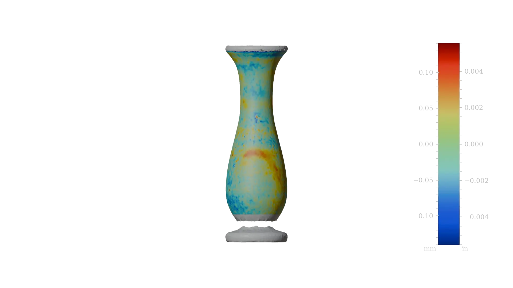
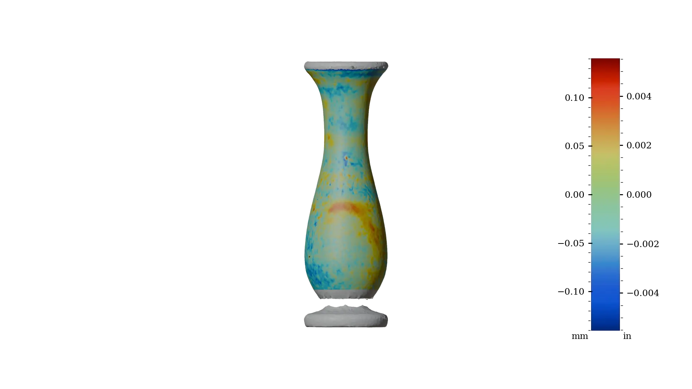
IV006 exterior, private collection of Max Fomitchev-Zamilov - Precision score: 622 - RMSD: 40 μm | 15.7 thou - Range: 454 μm | 178 thou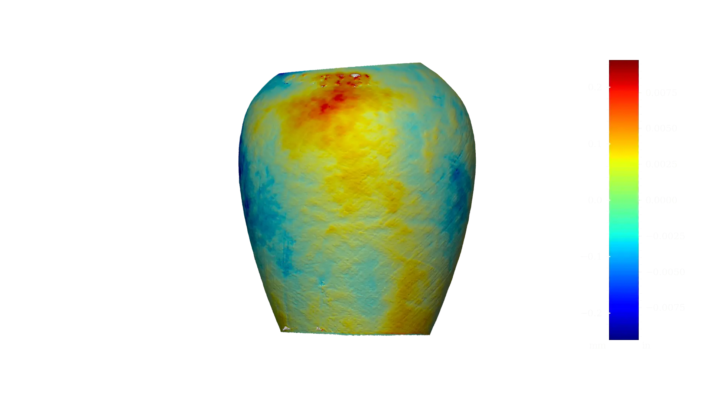
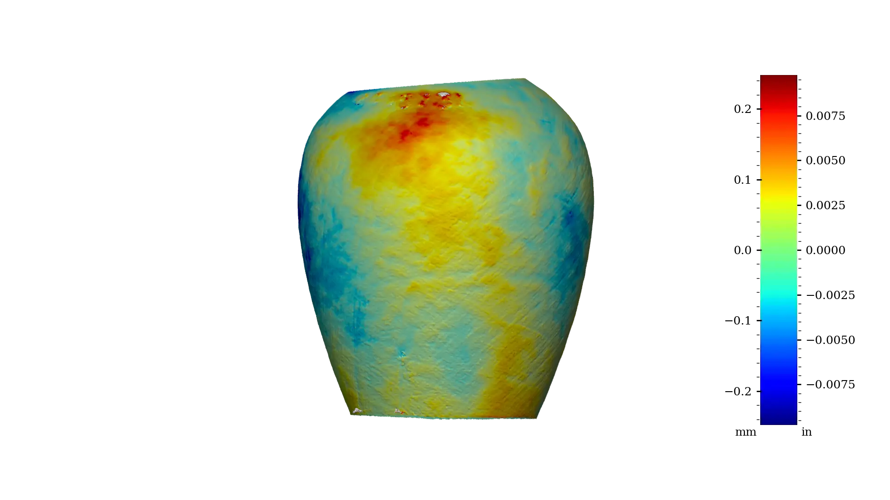
MV008 exterior, Petrie Museum LDUCE-UC15731 - Precision score: 199 - RMSD: 70 μm | 27.6 thou - Range: 1084 μm | 426 thou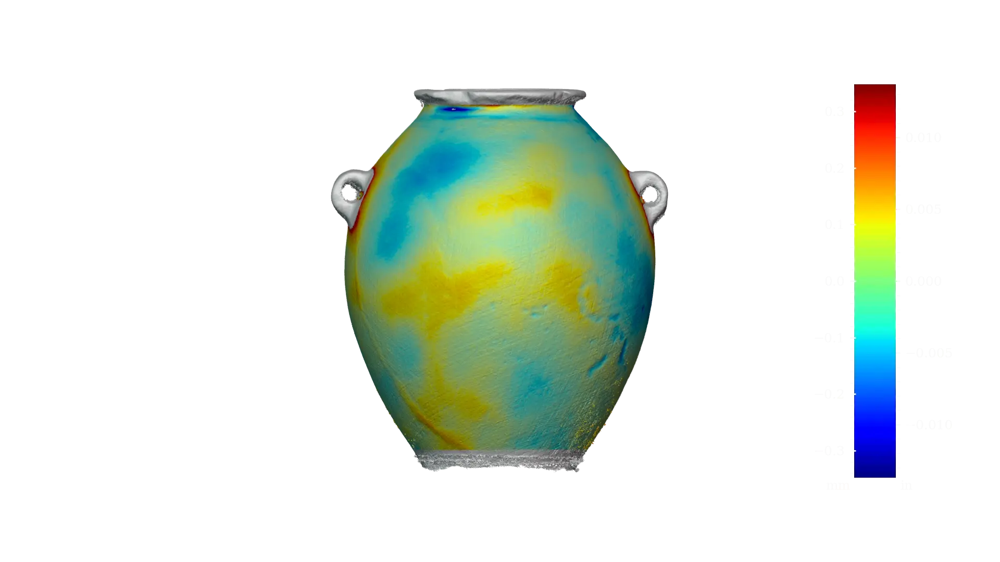
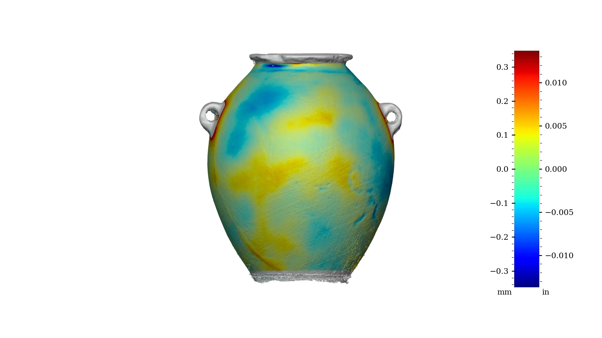
MV005 exterior, Petrie Museum LDUCE-UC15624 - Precision score: 113 - RMSD: 94 μm | 37 thou - Range: 1275 μm | 167 thou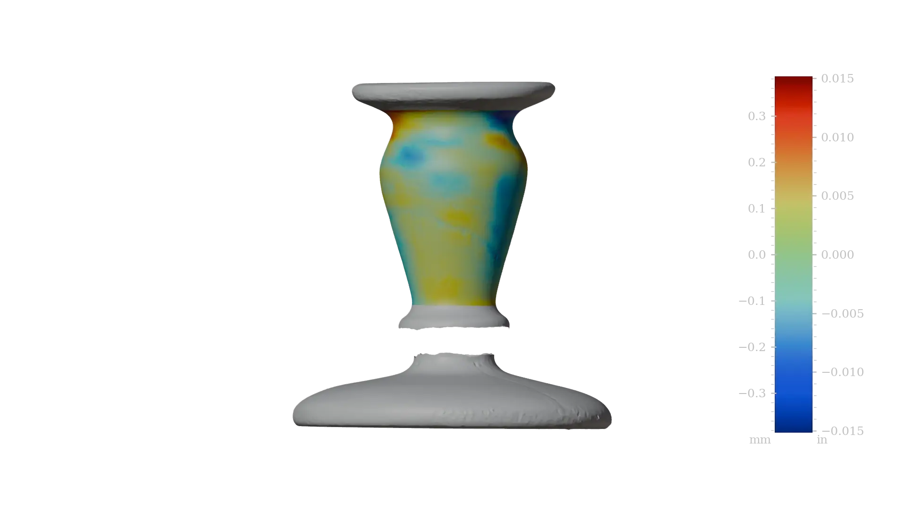
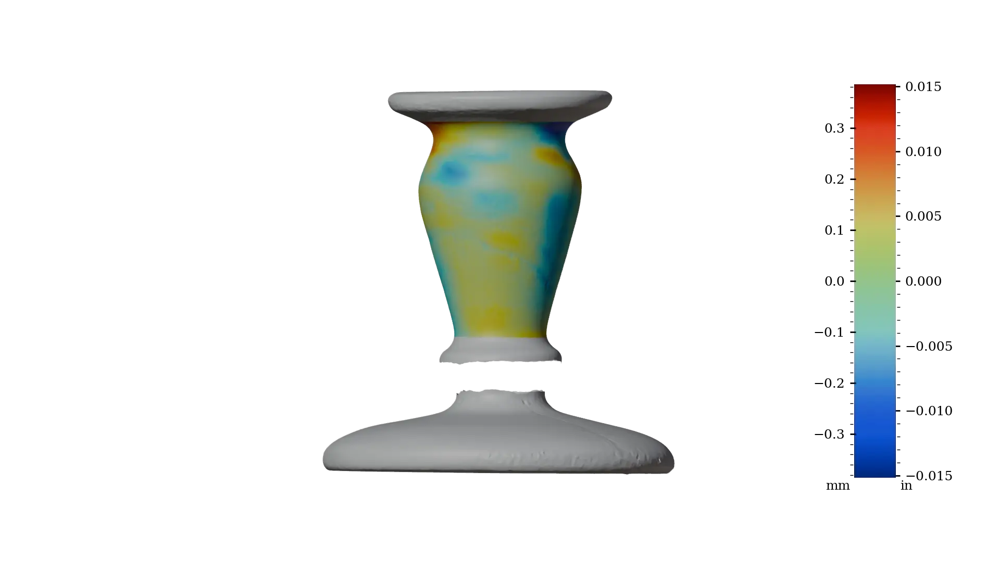
HV002 exterior, private collection of Max Fomitchev-Zamilov - Precision score: 72 - RMSD: 117 μm | 46 thou - Range: 751 μm | 296 thouThe Zeiss CT scan of PV001 provides exceptional mesh density, enabling measurement protocols far more rigorous than the custom measurements reported in 2023 with structured light scanning.
Prior to analysis, regions with visible damage or breakage were carefully identified and excluded from the measurement dataset. This selective exclusion ensures that only intact surface areas contribute to precision calculations, as damaged regions would introduce artificial variability unrelated to the original manufacturing process. Visual documentation of all excluded regions, appears in the appendix at the end of this article.
Our measurement approach implements metrological best practices:
This protocol ensures that all measurements used in subsequent ratio analysis meet metrological standards appropriate for evaluating potential intentional geometric relationships.
The following table presents diameter and radius measurements of key horizontal features in PV001, along with associated precision metrics that validate the reliability of each measurement:
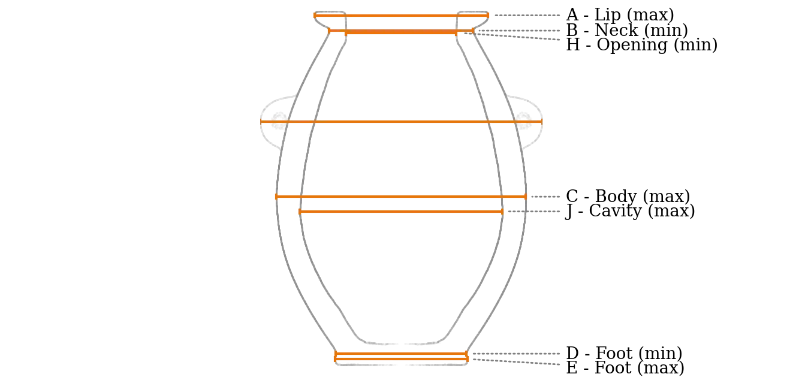
Measurement locations on PV001| Dimension | Diameter | Radius | RMSD | SD | Range | N in | N out |
|---|---|---|---|---|---|---|---|
| A - Lip (max) | 58.933 mm 2.320 in |
29.466 mm 1.160 in |
33 μm 1 thou |
18 μm 1 thou |
185 μm 7 thou |
1968 | 50 |
| B - Neck (min) | 48.996 mm 1.929 in |
24.498 mm 0.964 in |
22 μm 1 thou |
13 μm 1 thou |
126 μm 5 thou |
1895 | 11 |
| C - Body (max) | 84.822 mm 3.339 in |
42.411 mm 1.670 in |
16 μm 1 thou |
10 μm 0 thou |
119 μm 5 thou |
3187 | 51 |
| J - Cavity (max) | 68.891 mm 2.712 in |
34.446 mm 1.356 in |
25 μm 1 thou |
16 μm 1 thou |
250 μm 10 thou |
3200 | 56 |
| D - Foot (min) | 44.425 mm 1.749 in |
22.212 mm 0.875 in |
14 μm 1 thou |
9 μm 0 thou |
99 μm 4 thou |
1586 | 29 |
| E - Foot (max) | 45.043 mm 1.773 in |
22.522 mm 0.887 in |
17 μm 1 thou |
10 μm 0 thou |
102 μm 4 thou |
1037 | 5 |
| G - Handles (max) | 95.869 mm 3.774 in |
47.934 mm 1.887 in |
20 μm 1 thou |
11 μm 0 thou |
118 μm 5 thou |
339 | 20 |
| H - Opening (min) | 37.456 mm 1.475 in |
18.728 mm 0.737 in |
40 μm 2 thou |
20 μm 1 thou |
220 μm 9 thou |
1473 | 68 |
Detailed residual plots and histograms validating these fits appear at the end of the article.
Metrological assessment conclusion: The measurement quality across all features meets and exceeds metrological standards required for reliable ratio analysis. The consistency of precision metrics across multiple independent features demonstrates systematic manufacturing quality rather than isolated areas of exceptional craftsmanship. With RMSD values consistently below 40 μm and standard deviations proportionally low, these measurements provide a scientifically valid foundation for evaluating potential geometric relationships within the artifact.
Mark Qvist's 2023 analysis identified several ratios between features in PV001 that aligned with mathematical constants. With our new CT scan data and comprehensive measurement quality metrics, we can now evaluate these claims using established metrological principles.
Note, the finding of $\varphi^2$ is as notable as finding $\varphi$, as $\varphi$ has a special mathematical composition where: $\varphi = 1.618$ and $\varphi^2 = \varphi + 1 = 2.618$
| Ratio | Claimed Match | Margin of Error | Deviation (max/min) | Measurement Quality |
|---|---|---|---|---|
| $A_d / E_r$ | $\varphi^2$ | 0.05% | 0.015 / 0.006 mm | High |
| $B_d / H_r$ | $\varphi^2$ | 0.07% | 0.017 / 0.006 mm | High |
| $A_d / H_r$ | $\pi$ | 0.17% | 0.049 / 0.016 mm | High |
When evaluating potential mathematical relationships in manufactured objects, measurement uncertainty must be properly accounted for. The relationship between measured values and theoretical constants must be evaluated in the context of:
For PV001, we can calculate the combined measurement uncertainty for each ratio using standard error propagation techniques. For a ratio $R = X/Y$, the relative uncertainty is:
Applying this to our measurements:
These findings indicate that the observed ratios are not artifacts of measurement noise but represent genuine geometric relationships within the artifact's design. The precision of PV001 exceeds typical manufacturing tolerances for ancient stone vessels by an order of magnitude, creating conditions where such precise geometric relationships could theoretically be incorporated intentionally.
Metrological conclusion:
The CT scan data confirms Mark Qvist's core ratio claims involving $\varphi^2$ and π within metrologically significant margins. Given PV001's exceptional fabrication precision (surface variability RMSD of 22 μm), these alignments cannot be readily dismissed as coincidental. They represent geometric relationships that fall within the precision capabilities of the artifact's manufacture.
This analysis shifts the discussion from simple numerical alignment to evidence-based metrological assessment. Rather than merely noting proximity to mathematical constants, we now confirm these relationships are statistically significant given the measured precision of the artifact.
The following table presents all ratios on PV001 that align with combinations of $\varphi^2$ and π (and simple fractions) within a 2% error margin:
| Ratio | Possible match | Margin of error | Deviation (max/min) |
|---|---|---|---|
| $A_d / E_r$ | $\varphi^2$ | 0.05% | 0.015 / 0.006 mm |
| $B_d / H_r$ | $\varphi^2$ | 0.07% | 0.017 / 0.006 mm |
| $A_d / H_r$ | $\pi$ | 0.17% | 0.049 / 0.016 mm |
| $E_r / H_r$ | $\pi \over \varphi^2$ | 0.22% | 0.049 / 0.020 mm |
| $A_r / B_r$ | $\pi \over \varphi^2$ | 0.23% | 0.069 / 0.029 mm |
| $G_d / E_r$ | $\varphi^3$ | 0.49% | 0.233 / 0.055 mm |
| $G_r / A_r$ | $\varphi$ | 0.54% | 0.257 / 0.079 mm |
| $J_d / C_r$ | $\varphi$ | 0.39% | 0.134 / 0.083 mm |
| $G_r / B_r$ | $\pi \over \varphi$ | 0.77% | 0.369 / 0.095 mm |
| $D_r / H_r$ | $\pi \over \varphi^2$ | 1.16% | 0.261 / 0.109 mm |
| $J_d / D_r$ | $\pi$ | 1.28% | 0.446 / 0.142 mm |
| $A_d / D_r$ | $\varphi^2$ | 1.34% | 0.390 / 0.149 mm |
| $D_d / E_r$ | $\pi \over \varphi$ | 1.59% | 0.348 / 0.179 mm |
| $C_r / D_r$ | $\pi \over \varphi$ | 1.66% | 0.717 / 0.185 mm |
| $G_d / D_r$ | $\varphi^3$ | 1.89% | 0.888 / 0.210 mm |
This comprehensive list serves exploratory purposes only. Not all ratios demonstrate metrological significance, as some show deviations exceeding measurement uncertainty or involve features with lower statistical reliability.
Mark Qvist proposed a mathematical relationship among PV001's features in his 2023 analysis. The hypothesis suggests proportional relationships between key dimensions:
Quote from Mark's 2023 article:
"As a sort of mathematical gift, the designers of the object placed a double equivalence here: Since $D_o$ is already produced by $\pi$, the radius of the foot can be more purely described as $R_f = {R_i \times \pi \over \varphi^2}$. Because this creates an equivalence between all four measures, established by fundamental mathematical concepts, the following should be a reasonable extension:"
Where:
- $D_o$ = Outer diameter (feature A)
- $D_n$ = Neck diameter (feature B)
- $R_f$ = Foot radius (feature E)
- $R_i$ = Inner opening radius (feature H)
This framework implies a potential base unit where $R_i = 1$ establishes proportional relationships between all measured features.
Qvist further suggested that the inner opening radius ($H_r = 18.7278 mm$) corresponds closely to the wavelength of a 16 GHz electromagnetic wave in vacuum:
Our measurements show:
This alignment falls within the measurement uncertainty of our CT scan data (RMSD = 40 μm for this feature). However, metrological significance requires more than numerical proximity, it demands statistical evaluation of whether such alignments could occur by chance given PV001's measured precision profile.
The critical question we must address is: Does PV001's manufacturing precision support claims of intentional mathematical embedding?
To evaluate this properly, we need to establish:
In the a later section, I present a rigorous probability model that quantifies the likelihood of these mathematical alignments occurring by chance in an object with PV001's specific precision characteristics. This analysis will determine whether the observed relationships exceed expected random occurrence probabilities or fall within statistically plausible variation.
Until this statistical evaluation is complete, any interpretation of intentional design remains speculative, regardless of how compelling the numerical alignments may appear. Scientific rigor requires that we distinguish between mathematical coincidence and evidence of deliberate construction.
This section examines measurements of angular features corresponding to 1 radian arcs on PV001. For reference, a radian is a standard unit of angular measure defined as the angle subtended at the center of a circle by an arc equal in length to the radius of the circle. The provided visualization illustrates this geometric relationship:
Two measurement areas were analyzed in the cone-shaped region of the upper vessel where the exterior curvature transitions to a conical section. These measurements were obtained from scan data rotated around the z-axis to y=0, x>0, creating a 2D profile that includes all scanned data points.
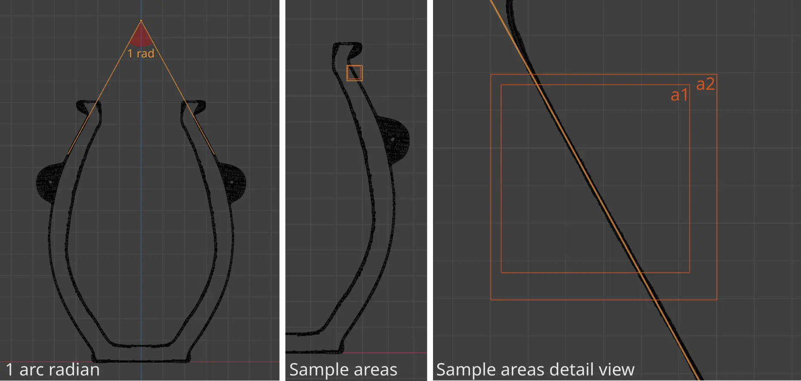
Orthogonal Distance Regression (ODR) was employed for linear fitting, as this method appropriately accounts for uncertainties in all coordinate directions by minimizing perpendicular distances to the fitted line. Unlike standard least squares regression, ODR is suitable for point cloud data where measurement errors exist in multiple dimensions.
| Tag | Angle | Arc angle | Y intercept | Standard Deviation | Median absolute deviation | Sample size |
|---|---|---|---|---|---|---|
| a1 | 0.50004 rad | 1.0001 rad | 157.88 mm | 10 μm (0.4 thou) | 7 μm (0.3 thou) | 268080 |
| a2 | 0.50049 rad | 1.0010 rad | 157.83 mm | 11 μm (0.4 thou) | 8 μm (0.3 thou) | 323314 |
The measurements demonstrate exceptional angular consistency with the theoretical 0.5 radian angle (corresponding to a 1 radian arc):
The precision of these features is notable, with standard deviations of 10-11 μm when measuring residuals perpendicular to the fitted line.
Mark Qvist's analysis identified a 1 radian feature on the lower handles. In this reanalysis, we measured the angular slope of the handle cone (0.5 radians) rather than the arc angle.
To obtain accurate measurements, the side portions of the handles were removed to prevent extraneous scan points from affecting the linear fit. This approach was preferred over algorithmic outlier filtering, which might inadvertently remove valid data points.
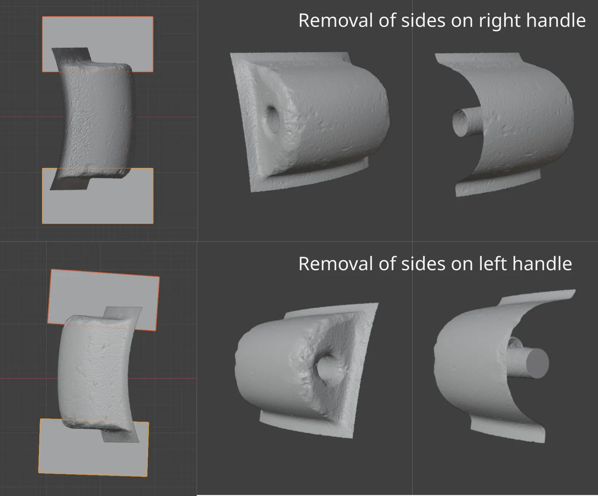
Two measurement areas were analyzed:
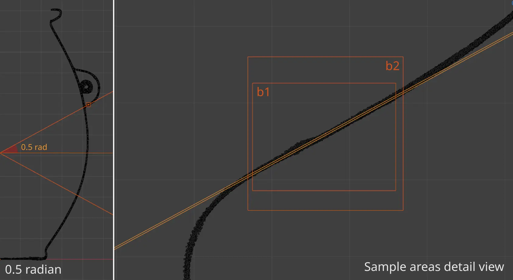
| Tag | Angle | Arc angle | Y intercept | Standard Deviation | Median absolute deviation | Sample size |
|---|---|---|---|---|---|---|
| a1 | 0.50004 rad | 1.0001 rad | 157.88 mm | 10 μm (0.4 thou) | 7 μm (0.3 thou) | 268080 |
| a2 | 0.50049 rad | 1.0010 rad | 157.83 mm | 11 μm (0.4 thou) | 8 μm (0.3 thou) | 323314 |
The angular measurements show:
Contrary to Mark's original analysis, our measurements do not confirm that the extrapolated 0.5 radian line intersects the z-axis at the widest part of the interior cavity. When overlaying a perfect 0.5 radian line on the data:
This discrepancy stems from limitations in the original structured light scan used in Mark's 2023 analysis, which had incomplete interior surface capture. Without full interior data, accurately determining the precise location of the cavity's maximum width would have been impossible.
The current CT scan provides complete interior geometry, allowing for more precise determination of this feature's location and revealing that the previously proposed geometric relationship does not hold with higher-resolution data. This finding underscores the importance of comprehensive data collection when evaluating potential intentional design elements.
While the ratios and constants are very definitely present, the real question now is whether this is because of intentional design, or mere chance coincidence.
To ascertain this in a demonstrable way, I have written a program that statistically calculates the probabilities of such an object occurring by chance, given the constraints that we know and the overall compositional range of the vessels in general. You can download, verify and run the source code yourself.
The program uses a null-hypothesis approach to evaluate the probabilities of certain interlocking ratios existing. You can modify the program to experiment with various configurations and simulation runs yourself. The program calculates three probabilities:
For a distribution of 100,000 randomly created vases, within time-typical compositional boundaries defined by measurement ranges of Petrie scans with similar compositions, we find:
A) Probability of finding vessel with 3+ matches (all constants):
p = 0.06235 (95% CI: [0.06087, 0.06387])
Bayes Factor: 16.04 (Strong evidence)
Expected by chance: 6235.00 vessels
Chance: 6.2350% (6235.0/100000)
B) Probability with precision requirements (2×<0.07%, 1×<0.2%, π/φ/φ², d/r only):
p = 0.00057 (95% CI: [0.00044, 0.00074])
Bayes Factor: 1754.39 (Decisive evidence)
Expected by chance: 57.00 vessels
Chance: 0.0570% (57.0/100000)
C) Probability with interlocking properties:
p = 0.00004 (95% CI: [0.00002, 0.00010])
Bayes Factor: 25000.00 (Decisive evidence)
Chance: 0.0040% (4.0/100000)
The probability of finding an object with three interlocking ratios, like PV001, is approximately $0.004\%$.
Yes, mathematically significant ratios can be found in other vessels as well. For a sufficiently large ratio search set, almost always at least one per vessel!
The problem with this approach, though, is that only very few vessels are available in the dataset, with high enough precision to make this statistically meaningful.
We do have PV003 though. Curiously, another vessel in the private collection of Adam Young.
What are the odds?
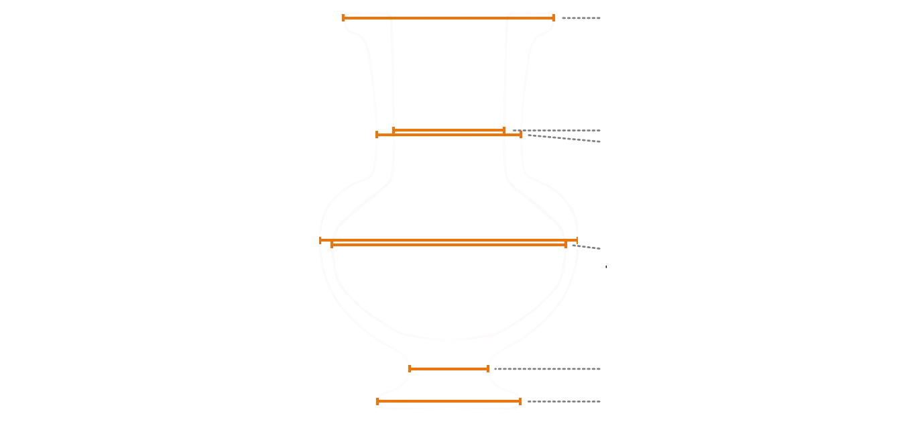
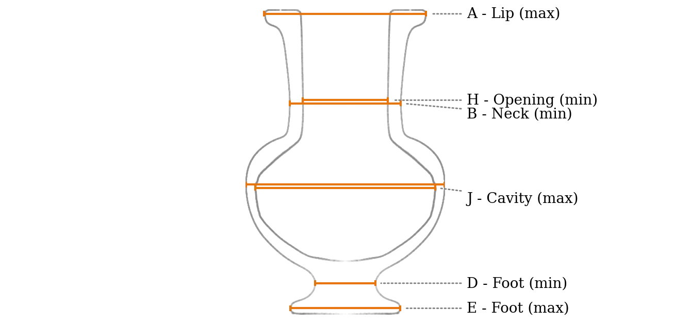
Measurement locations on PV001| Ratio | Possible match | Margin of error | Deviation (max/min) |
|---|---|---|---|
| $B_d / H_r$ | $\varphi^2$ | 0.00% | 0.000 / 0.000 mm |
| $J_d / H_r$ | $\varphi^3$ | 0.32% | 0.103 / 0.024 mm |
| $J_r / B_r$ | $\varphi$ | 0.32% | 0.103 / 0.032 mm |
| $A_d / C_r$ | $\varphi$ | 0.19% | 0.055 / 0.034 mm |
| $D_r / J_r$ | $1/3$ | 0.44% | 0.072 / 0.048 mm |
| $A_r / D_r$ | $\varphi^2$ | 1.82% | 0.518 / 0.099 mm |
| $E_d / H_r$ | $\varphi^2$ | 1.60% | 0.320 / 0.122 mm |
| $E_d / B_r$ | $\pi \over \varphi$ | 1.35% | 0.263 / 0.135 mm |
| $E_d / J_r$ | $\pi \over \varphi^2$ | 1.03% | 0.201 / 0.167 mm |
| $J_r / E_r$ | $\varphi$ | 1.95% | 0.621 / 0.192 mm |
Mark Qvist's Radial Traversal Pattern hypothesis proposes that PV001 incorporates a specific geometric progression of circles with the defined radius $R(n) = \left({\sqrt{6} \over 2}\right)^n$, with this sequence of circles outlining key features of the vessel, particularly the handle curvature, lip profile, and foot design. While visually compelling in his 2023 analysis, this claim requires rigorous metrological evaluation to determine whether the pattern represents intentional design or statistical artifact.
When analyzing partial circular features (arcs) rather than complete circles, determining precise circle parameters becomes mathematically underconstrained. This fundamental limitation has significant implications for pattern recognition:
Without acknowledging these constraints, pattern recognition risks becoming numerology rather than archaeology. The Radial Traversal Pattern isn't impossible, it's simply statistically indistinguishable from random variation within PV001's measured precision envelope.
To demonstrate this instability, I applied nine different circle-fitting algorithms to three key features of PV001, with slight variations in sample location for each feature. When algorithms agreed within the third decimal place, only one representative fit have been included in the results.
| Sample | Benchmark Radius (Radial Traversal Pattern) |
Measured Radii |
|---|---|---|
| Neck arc 1 | 1.1235 mm | skimage_standard: 1.31 mm hyperLSQ: 1.41 mm |
| Neck arc 2 | 1.1235 mm | skimage_standard: 1.38 mm hyperLSQ: 1.53 mm riemannSWFLa: 1.52 mm |
| Neck arc 3 | 1.1235 mm | skimage_standard: 1.28 mm hyperLSQ: 1.36 mm riemannSWFLa: 1.35 mm |
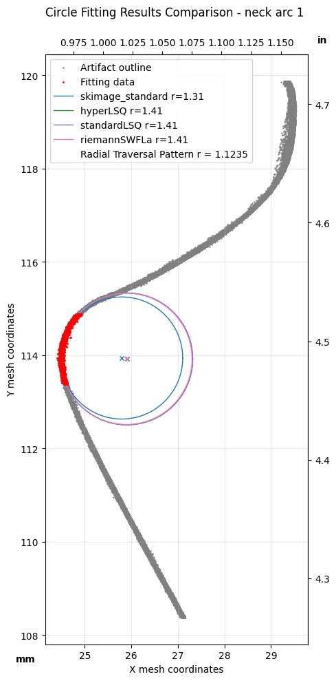
Neck curvature, sample 1, best fit circles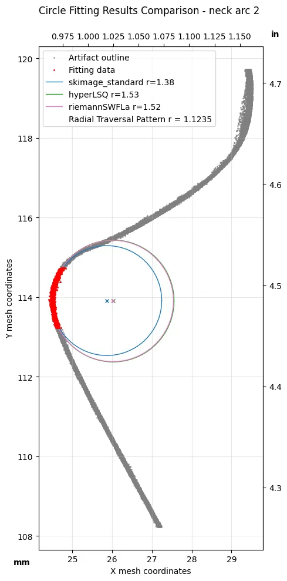
Neck curvature, sample 2, best fit circles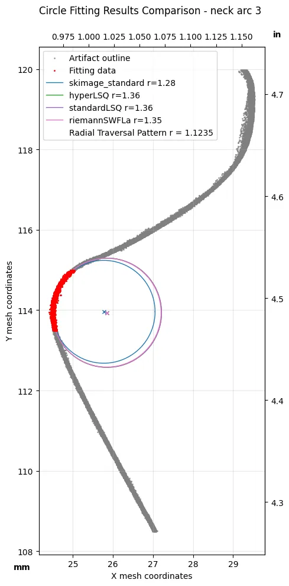
Neck curvature, sample 3, best fit circles| Sample | Benchmark Radius (Radial Traversal Pattern) |
Measured Radii |
|---|---|---|
| Lower lip arc 1 | 10.264 mm | skimage_standard: 10.03 mm hyperLSQ: 11.51 mm riemannSWFLa: 11.50 mm |
| Lower lip arc 2 | 10.264 mm | skimage_standard: 9.27 mm hyperLSQ: 10.92 mm riemannSWFLa: 10.91 mm |
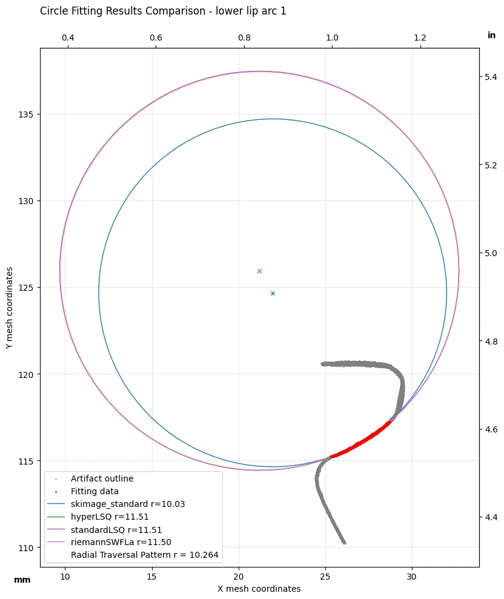
Lower lip curvature, sample 1, best fit circles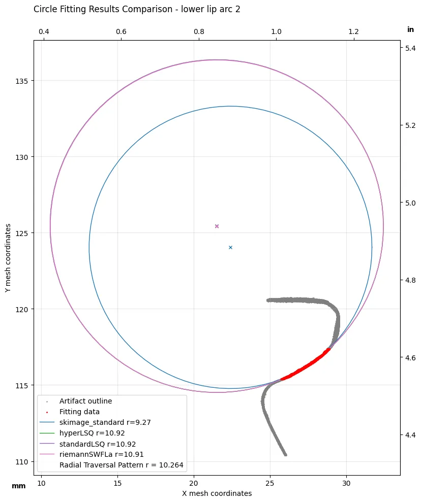
Lower lip curvature, sample 2, best fit circles| Sample | Benchmark Radius (Radial Traversal Pattern) |
Measured Radii |
|---|---|---|
| Foot arc 1 | 2.5015 mm | skimage_standard: 1.40 mm hyperLSQ: 1.68 mm standardLSQ: 1.63 mm riemannSWFLa: 1.65 mm |
| Foot arc 2 | 2.5015 mm | skimage_standard: 1.60 mm hyperLSQ: 2.12 mm standardLSQ: 2.07 mm riemannSWFLa: 2.09 mm |
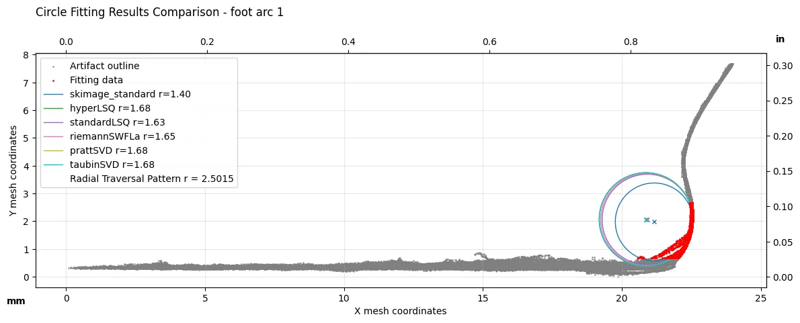
Foot curvature, sample 1, best fit circles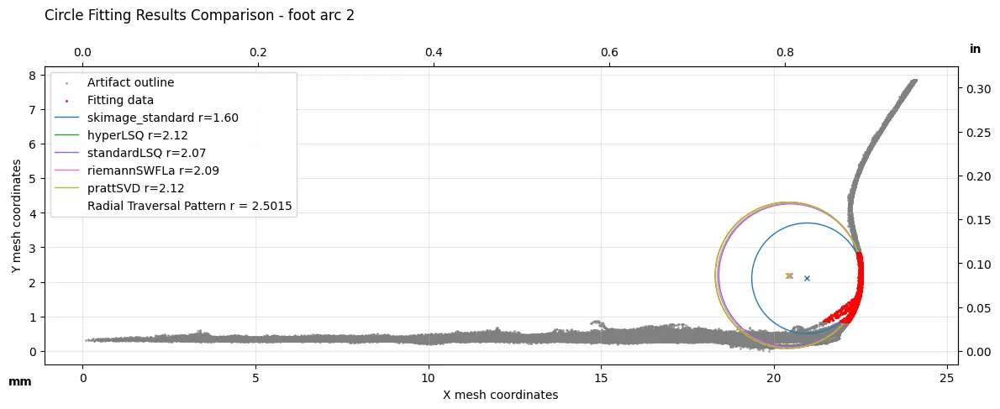
Foot curvature, sample 2, best fit circlesThe results demonstrate significant variability in fitted radii, even with minor changes to sample location. This instability confirms the mathematical principle that arc segments alone cannot reliably determine circle parameters within PV001's precision envelope.
I therefore reject the proposed hypothesis that the curvature of the artifact was designed using circular features derived from the Radial Traversal Pattern.
The emergence of the Radial Traversal Pattern rely on circles interlocking with the vessel geometry at selected locations:
 Interlocking point of the Radial Traversal Pattern - Image courtesy Mark Qvist
Interlocking point of the Radial Traversal Pattern - Image courtesy Mark Qvist
The original structured light scan used by Mark Qvist had limitations in capturing the complete interior cavity. The new CT scan provides full-coverage geometry, allowing direct evaluation of the Radial Traversal Pattern's proposed interlocking points:
| Feature | Predicted by Pattern | Measured (CT Scan) | Deviation |
|---|---|---|---|
| Interior cavity diameter | 68.891 mm | 68.891 mm | 0 μm |
| Exterior body diameter (should be 68.891 × √6/2) |
84.3739 mm | 84.822 mm | 448 μm |
When overlaying the Radial Traversal Pattern's CAD model (provided for this analysis by Mark) on the CT scan data, we observe discrepancies at key interlocking points:
It should be noted that these discrepancies could potentially be minimized through parameter adjustment, specifically by modifying the interior cavity diameter used as the pattern's starting point. Such optimization might reduce deviations at certain interlocking points while increasing them at others. Such fine-tuning falls outside the scope of objective pattern validation and is not pursued in this analysis.
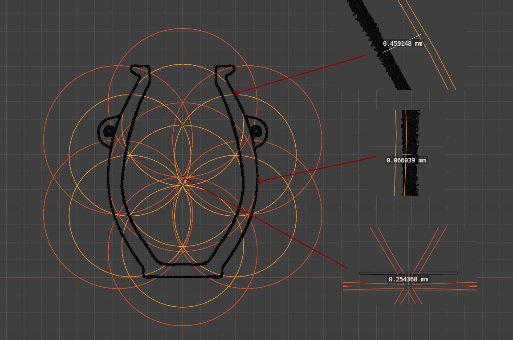
The Radial Traversal Pattern's interlocking points compared with CT scan dataThe evidence reveals two critical issues with the Radial Traversal Pattern hypothesis:
The Radial Traversal Pattern falls into what's called the "confirmation trap": when searching for specific patterns in complex data, we inevitably find apparent matches that align with our expectations.
True validation would require:
Without these elements, any perceived pattern remains suggestive rather than conclusive - a cautionary tale about the importance of metrological rigor when investigating visually compelling patterns.
While both the invalidation of the existence of the Radial Traversal Pattern, and the confirmation of a statistically significant existence of mathematical ratios seem like interesting new insights, they are in fact rather inconsequential.
They are so because of a much deeper, underlying issue with the provenance of the object, and especially the credibility and conduct of some of the people behind its presentation to the world.
In the following sections, I will detail my experience of lending my skill and assistance to the so-called "Artifact Foundation": A commercial, for-profit incorporated company based in New York, posing as a research organization.
In metrology, we understand that measurement errors propagate through calculation chains. But what happens when the integrity of the process itself becomes the primary error source?
The Artifact Foundation's conduct provides a textbook case of how a series of ethical breaches compound into catastrophic unreliability - exactly the kind of scientific misconduct that undermines legitimate research into ancient civilizations.
Scientific integrity operates on the same mathematical principles as measurement precision: small errors amplify through calculation chains. What began as seemingly minor ethical lapses at the Artifact Foundation, have propagated into a complete breakdown of scholarly trust.
During almost two years of involvement with the project, this became inescapably obvious, one step at a time.
From mid 2023 to February 2025, I worked extensively with Adam Young (with Karoly Poka joining the project August 2024) under what I believed was a shared commitment to uncovering the truth about ancient Egyptian stone vessels:
This represented nearly two years of invested work, with everything performed completely unpaid and out of genuine scholarly interest.
The breakdown began in February 2025 when inconvenient truths emerged from my analysis:
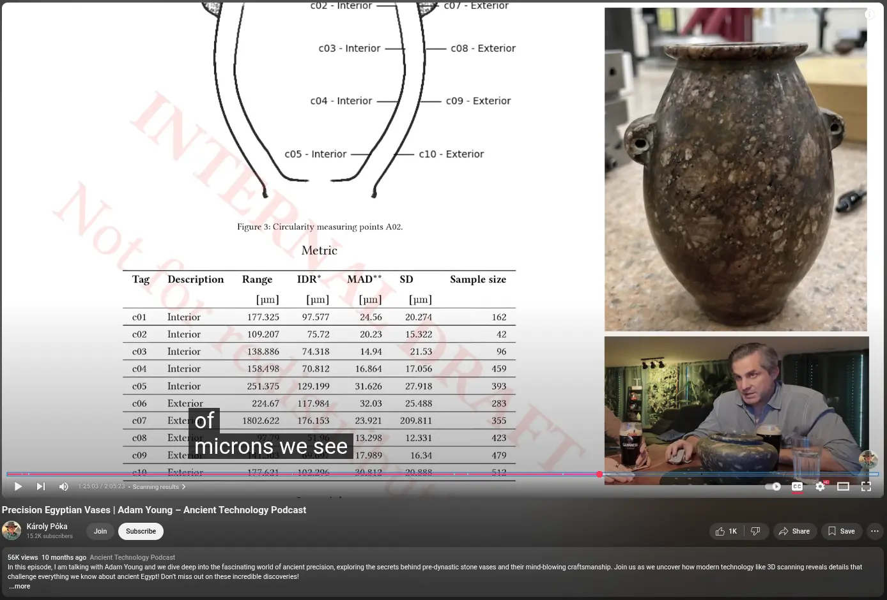
The most egregious example of deliberate deception occurred at the 2024 Cosmic Summit, where Adam Young presented fabricated data to support extraordinary claims:
Presentation of draft and example data without attributions
At the conference, Adam Young presented several slides using data from my draft research material, without referencing me as the author (though, in several other places he did provide proper attribution, so apparently he is somewhat capable of this). He never asked about, or told me he had used my draft material in this manner. I found out when I watched the video in March 2025.
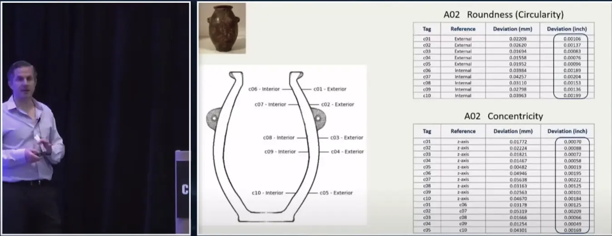
Deliberate Use of Incorrect Data
Despite receiving a corrected analysis a week prior, Adam presented outdated draft data I'd explicitly labeled as incorrect (due to a poorly aligned scan, that was sent as an example). By using data he had been informed was incorrect, Adam made a CNC vessel replica look very bad compared to the "real ancient artifact" on which it was based.
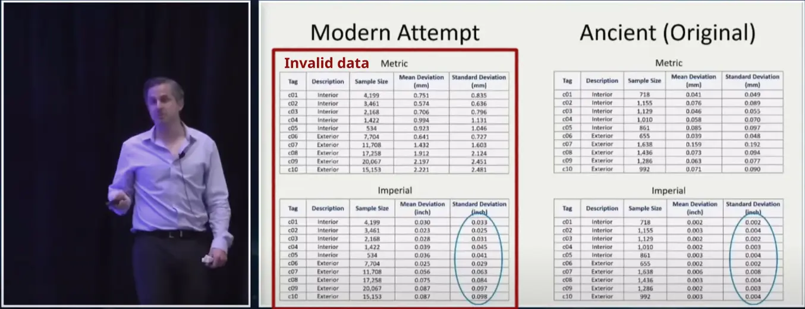
"Invalid data" emphasis added in redData Substitution Fraud
For the "real ancient artifact" vessel comparison, he substituted data from his private collection piece PV002 (previously named A01) instead of the actual vessel's original artifact PV006 - creating a false narrative of extraordinary ancient precision.
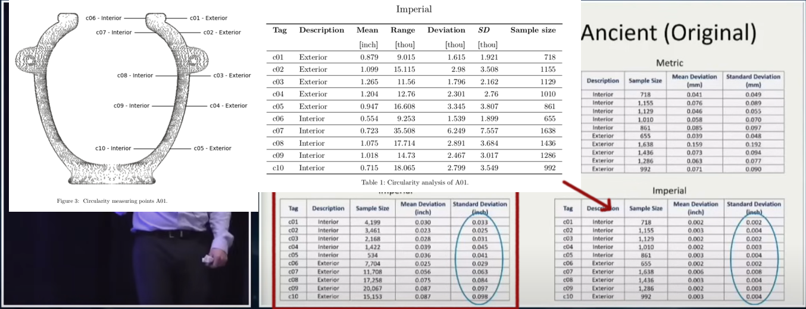
Actual source of the data - not the original!Further, at another live event hosted by Cosmic Summit in 2025, advertised with the text: "On March 22, Adam Young will be revealing the secrets of ancient Egyptian vases—objects so precise they challenge everything we know":
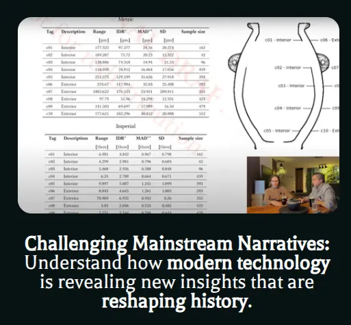
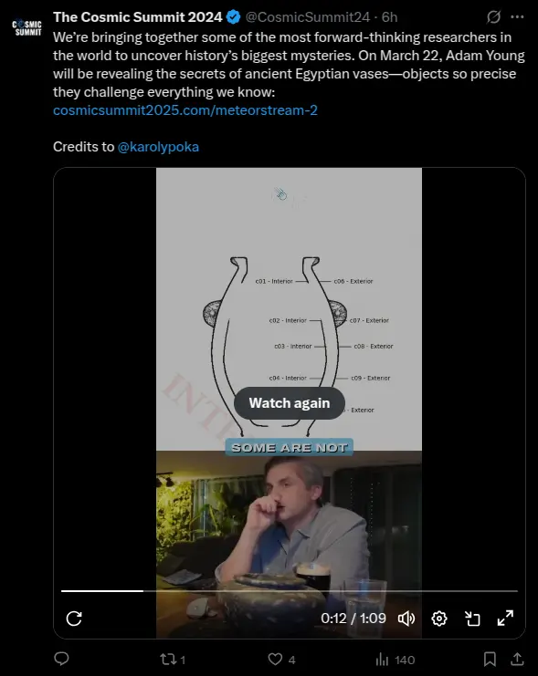
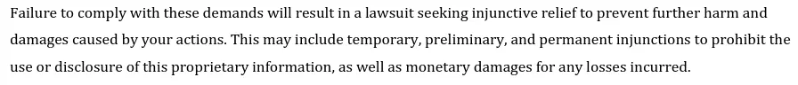
This wasn't a series of unfortunate accidents later corrected, but a persistent, systematic pattern of scientific misconduct:
Museum Policy Lie
After their direct demands failed, to prevent me from publishing, Adam and Karoly falsely claimed that the Petrie Museum required review and acceptance of research material before publication. The museum confirmed this was untrue.
Silencing By Legal Threats
Karoly attempted to force me into submission by threatening a lawsuit.
Logo Theft Accusation
Adam publicly accused me of stealing his logo, a claim that collapsed when evidence showed he had taken the image from one of my early copyrighted draft reports. Despite this, he continues to insist he created it in Photoshop.
Missing Attribution & Plagiarism
Karoly and Adam claimed they would never use my material without crediting me, while simultaneously: Karoly used images from my unfinished, INTERNAL DRAFT reports on YouTube. Adam had presented my draft material at the Cosmic Summit event 2024.
Code Availability Misrepresentation
Attempting to justify his actions, Adam repeatedly made variations of the claim that "it was unprofessional not to submit your code for vetting", yet they never actually asked for this! What they did ask for - shortly before kicking me from the project - was to transfer the entire codebase of my analysis framework to Artifact Foundation, so others in Artifact Foundation could use it to analyze vessels themselves.
The Artifact Foundation's misconduct has severe implications that invalidate their entire analytical framework:
Broken Chain of Trust
Without verifiable data provenance, all precision claims become scientifically meaningless. In industrial metrology, a single broken chain link invalidates certification; the documented number falls significantly above that here. Artifact Foundation has clearly demonstrated that they hold no reservations towards neither lying, manipulating data, censoring inconvenient results, nor direct threats.
Invalid Methodology & Precision Metric
The Geometric Mean metric, employed by Artifact Foundation is not a metric, but a meaningless charade that can be tweaked and manipulated to produce desired results. This has been thoroughly demonstrated in my prior work. The method is particularly vulnerable to deliberate misalignment. A mere 0.05° rotational shift can artificially inflate or deflate the final scores by 17%. The Artifact Foundation have already presented their research using their mathematically invalid metric.
Confirmation Bias Institutionalized
By using known incorrect data and swapping results between artifacts at presentations, they revealed their true priority: Confirming pre-existing beliefs rather than discovering truth.
Statistical Misapplication
Their use of medians discards 50% of error data, artificially suppressing deviations critical to precision assessment - industrial metrology prioritizes maximum deviations, not central tendencies.
To Adam Young and Karoly Poka: Your "foundation" has mastered the art of Error Propagation - lies about museum policies and fabrications in many flavors have progressively compounded into catastrophic falsity about human history.
In metrology, we discard measurements when the error propagation exceeds acceptable thresholds. The same standard applies to scientific integrity: Your documented pattern of misconduct invalidates not just individual findings, but your entire analytical framework.
The most precise measurement you've made isn't on ancient vessels - it's of how quickly scholarly ethics can deteriorate when commercial and personal interests override truth-seeking. PV001 may be a masterpiece, but your foundation's true artifact is a monument to how not to do science: Where metrics are malleable, data is proprietary, and truth is whatever sells tickets to the next Cosmic Summit.
To all of us: Extraordinary precision claims require extraordinary evidence - not extraordinary evasion of peer review. When researchers deliberately present incorrect data while claiming ancient technological marvels, they've crossed from questionable scholarship into scientific misconduct.
The only artifacts with a precision score greater than 1,000 are two of Adam's vessels (PV001 and PV003). No industrial vase shows this level of precision across the exterior curvature. The maximum exterior surface Precision Score of industrial vases is IV006 with just 622. Remember, the precision score is exponential - it punishes minor surface deviations exponentially.
The high scores of PV001 and PV003 introduce further questions: You would expect such an old artifact to show wear and tear (even granite vessels), yet their exterior smoothness exceeds new ones produced on modern lathes. Metrology without integrity is numerology; scholarship without ethics is theater.
Furthermore, the only two known examples of such precise vessels are both privately held by the same individual, while no other known purportedly ancient object comes even close - across a now substantive dataset. Statistically, this is highly suspicious. Other privately held vessels claimed as high precision, such as those of Matt Beall, also fall way below (one could speculate this is why Matt does not want me to analyze and publish reports on his collection).
To the field: Demand raw scan data, protocol transparency, and third-party validation before engaging with private collections. As demonstrated here, extraordinary precision claims should not just be taken at face value, but undergo careful, multi-peer scrutiny.
I worked on Matt's scans at the end of 2023, when he first started scanning his vessels and before he had his podcast. Again the project was presented as open-source, scans were shared freely. When I called for a meeting with several interested individuals in the community, to present what I was working on and discuss the methodology and findings, Matt send me a message:
"Just a reminder that I do want to keep the results of my vases confidential. I have a podcast now, I’m working with [XXX], and I’m also working with [XXX] and [XXX], all separately at times and together at times. I need to be able to pick and choose what vases to share with each group at different times, so please only share the reports and results of my vases with me."
I rejected - I wanted a transparent and open-data project - Not treating any findings like they were secrets to be hoarded and exploited. At that time, I did agree not to share the files - A promise I have kept until now, but at this point I will have to expose something important.
In March 2025 I contacted Matt again with an offer: To analyze all his vessel scans and make detailed precision reports covering his full collection, free of charge - He declined my offer: Not interested.
Scans from private collection are only being shared with selected individuals. Both Matt and Adam are withholding their scans from both researchers and the public alike, with only a selected few being allowed to "verify" their splendid precision.
In April of this year, I made Ben van Kerkwyk and Matt Beall aware, that at least one of the STL files hosted on their respective websites (the vase titled Vase 3 "Spinner" and OG Spinner, from Matt Beall's private collection, was extensively manipulated. I know, because I am in possession of the original CT scan data, which Matt had me analyze more than two years ago. Ben did nothing, and Matt attempted a vague deflection by claiming I was just "unfamiliar with CT scanning":
"Your confusion may stem from being unfamiliar with CT scanning. [...] There’s no spinner vase on my website. I don’t know what you’re talking about."
Well, this is what I'm talking about:
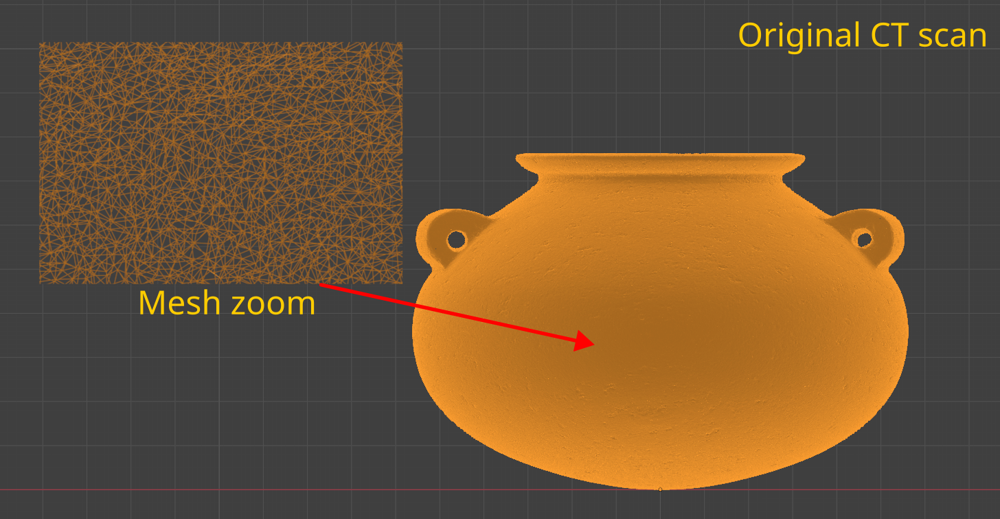
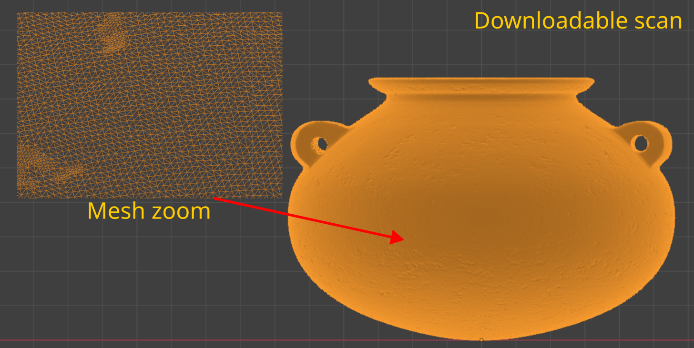
The scan has clearly been edited and reworked, now showing a completely uniform vertex structure. Not what you would expect from a CT scan. It looks like someone took the raw CT scan, completely smoothed out the surface and then added a textured bump-map.
For that vessel, at least, the data being presented publicly now is not data, it is an artists re-interpretation. Are there more like it? I'm tempted to simply release my entire dataset of raw, high-resolution scans, so everyone can validate for themselves.
Ben, with all due respect, this one is for you: You were made aware of this entire situation months ago. It's easy to hide behind the phrase "I'm just the reporter, sharing what was shared to me" - No personal accountability, no critical thinking about the data being shared, just acting like a parrot who only share data conforming to the needs of a few friends.
You were already informed by me in April about manipulated scan data, and you did nothing. The reporting is one-sided, genuine criticism is ignored, while the dramatic invalid criticism is made fun of. This is not the role of a reporter, but the role of someone spreading propaganda.
I'm sorry to be so hard here, but it has to be said! I do believe in the importance of investigating a potential lost ancient civilization, and that there are many things we do not yet know! But we can only get to the real truth if we stop parroting liars with fundamentally flawed methodologies.
I ask you with respect, correct this mess, do share all aspects of the story, and the real data: Regain your reputation as one of the front-runners in searching for the truth.
All this is said with high respect towards your prior work. Do not fall prey to the same trap as everyone else these days - The community needs a lighthouse. Please shine your light without filtering through a flawed prism.
Considered in the light of the Artifact Foundation's catastrophic cascade of integrity failures, the impossible precision of PV001 becomes explainable under a very simple framework:
The object does requires sophisticated design-to-production transfer capabilities, although not as advanced as first hypothesized in Mark's original article, due to the non-existence of the radial traversal pattern.
As evidenced by the verifiably authentic Egyptian masterpieces, human beings have always sought to push the limits of artisanal production. The object aligns well with such mastery-seeking; but temporally located in the 20th century, though. Not 3.000 BCE.
No surface wear or weathering is detectable in the scan data. The object is smoother than a freshly milled, modern CNC piece.
The object's precision is only impossible if it is artificially transposed to pre-modern times. In a mid-to-late 20th century production facility, it is definitely a curiosity and a masterpiece, but entirely plausible.
The data is far more probable under modern forgery than a pre-assumed 5,000+ year history.
I finished what I set out to do, and I learned a lot along the way!
Extraordinary precision claims require extraordinary evidence. What we have instead is an extraordinary pattern of misconduct. In metrology as in all science: When the instrument is compromised, so are its readings. The only thing more precisely engineered than these "artifacts" is Artifact Foundation's evasion of scientific accountability.
The artifact PV001 still stands as the absolute unicorn of the dataset. Exceeding all other artifacts, not only in fabrication precision but in mathematical relations as well.
While refuting the existence of the radial traversal pattern, I've demonstrated the mathematical ratio measurements proposed by Mark to be true. This very clearly suggests a blueprint being in existence for this artifact, before its physical production in granite. Something that could only have been achieved with sophisticated technology, as stated by Mark.
That the Radial Traversal Pattern was rejected does not change the fact that this artifact displays some amazing features, not seen in any other scanned artifacts.
The existence of PV001 can only mean one of three things:
The artifact is indeed genuine and 5,000+ years old - which would represent one of archaeology's most profound discoveries, evidence of a sophisticated civilization that came before us.
It is a modern replica, produced with minute attention to detail and great craftsmanship.
It is a genuine artifact (purchased in the 1980'es as per Adam Young's claims), but later reworked on modern machines: Using precision-grinding, polishing and then corrected until it achieved its marvelous precision.
The age of this "artifact" is not 5,000+ years. More likely, that number is off by a factor of ~1,000.
Everyone can make mistakes, it happens in science as it happens in daily life. When scientists find logical flaws or errors in each others work, the critique should be highly valued - errors and logical flaws will be corrected. Everyone benefits.
This is not the case with the data produced by the Artifact Foundation. Their tactic is to block and censor other researcher's materials (especially critiques of their work). They have a track record of data manipulation to make the results match what they set out to prove. This type of "research" and scientific practice should not be welcomed in the field. In this light, it is a very hard sell to criticize figures like Flint Dibble as representative of the general flaws in mainstream archeology.
Now the alternative community must hold the same standards internally as externally - If not, the level of dogma here is the same as the level of dogma they accuse others of. If we've set out to understand whether ancient lost civilizations existed (as I believe they might have) we need to dismiss untruthful sources like the Artifact Foundation. They are diluting the credibility of the actual work done by others, hampering the ability to find the very evidence and data so sorely needed to actually test the hypothesis!
Does this mean I outright reject the hypothesis, set forth by knowledgeable individuals in the community; that there might have been a lost civilization before us, a technologically advance civilization that crumbled, and from its rubble we build our own? No, for me there are still many pointers to this hypothesis that needs proper investigation - no matter if that leads to confirmation or dismissal.
I still believe in the importance of investigating the hypothesis, but until valid evidence presents itself, it will only be a hypothesis.
I came into this project hoping to find solid evidence that could be used to ascertain the existence of this lost civilization, instead I found a noisy dataset (both physically and morally). If the community really wishes to rewrite history by documenting a so far unknown civilization, we need to stay rigorous and true.
The dogma that the community accuses archeologists of - that they hold on to beliefs in spite of counter-evidence - seems to also be true within that very community. Many people want to conjure up evidence so badly that they distort the data and reject what the data actually shows.
And of course, if a genuine museum artifact is presented, which match the incredible precision of PV001 and PV003 - I will be the first to offer a serious (and truly open and non-profit) investigation of it. If this data is presented by the Artifact Foundation though, we must reject it due to their currently demonstrated misconduct.
We still have a scientist in our midst who is not swayed by dogma and who knows how to follow evidence wherever it leads - I encourage you to follow the analysis put forth in Max Fomitchev-Zamilov's articles, I'm sure he will continue the search for scans of precision artifacts and perform rigorous analysis of the datasets. Max, if you ever find a vessel approaching the precision of PV001, you know how to find me - I would be compelled into the field once again.
It is painful to watch real evidence drowned in the noise of charlatans, clawing for attention and polluting the field with flawed data and wishful thinking.
The currency in which I was paid for the time spent on my research was curiosity and the happiness of discovery and sharing knowledge. But I am a human and not a robot. The drama of the vase scan project, with ridiculous claims, censoring and insults, is not an environment I want to waste my skill, energy and time in.
I engaged in this endeavor freely and without expecting any payment other than my own happiness in the pursuit of the truth. Until the field grows a spine and shows some integrity, I will invest my energy elsewhere.
Detailed residuals plots of the dimensional measurements on PV001.
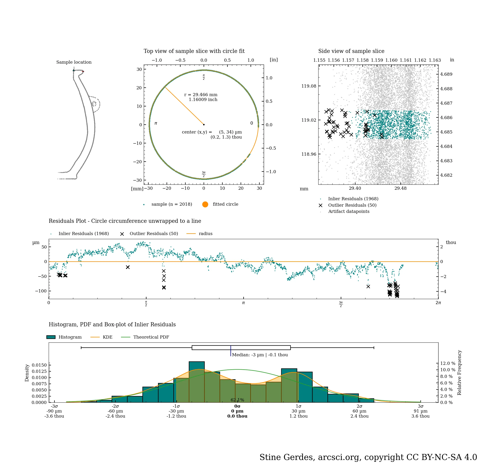
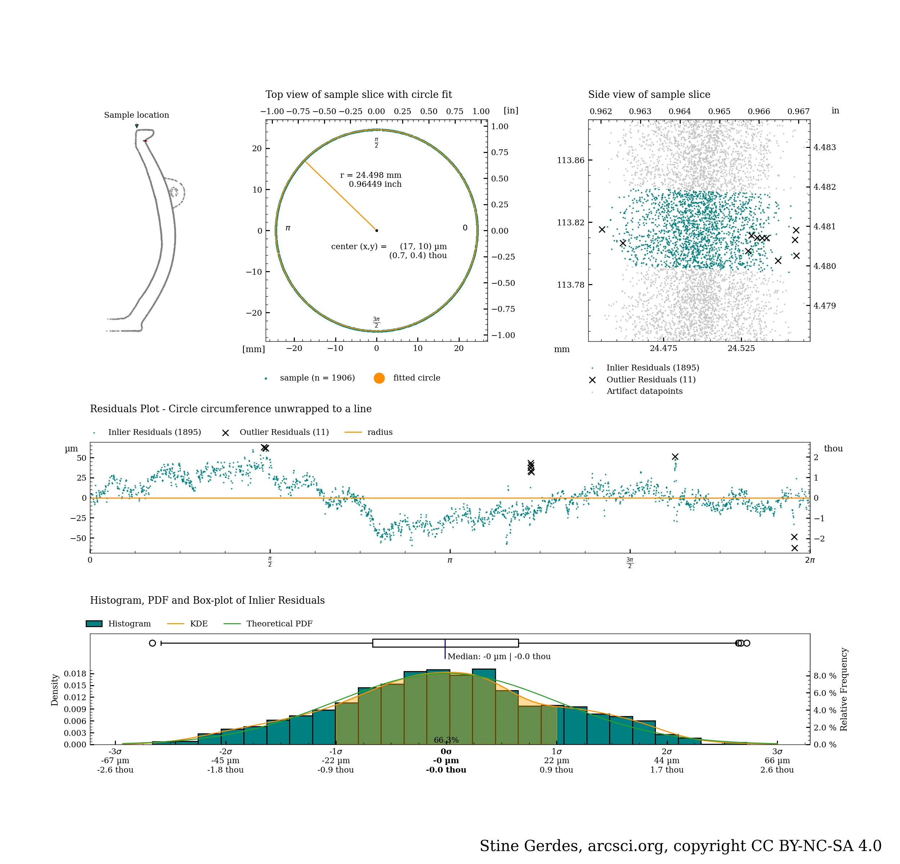
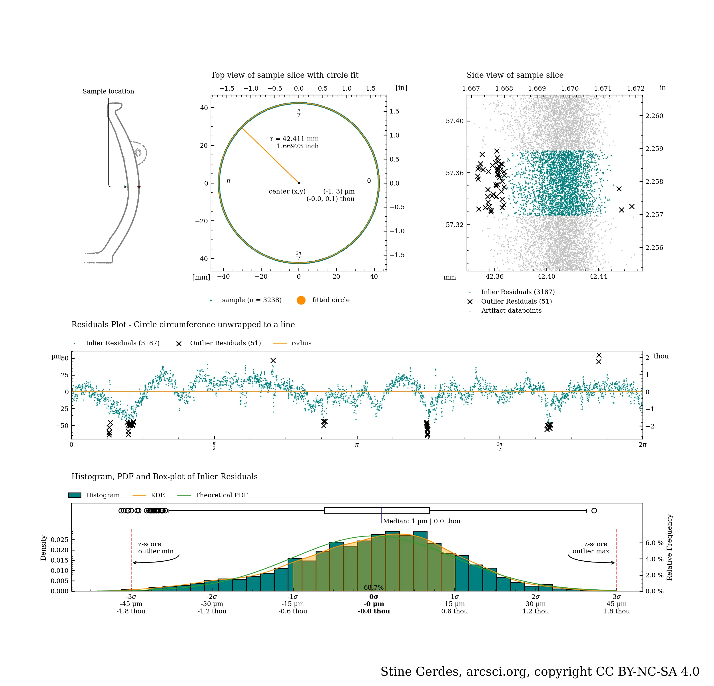
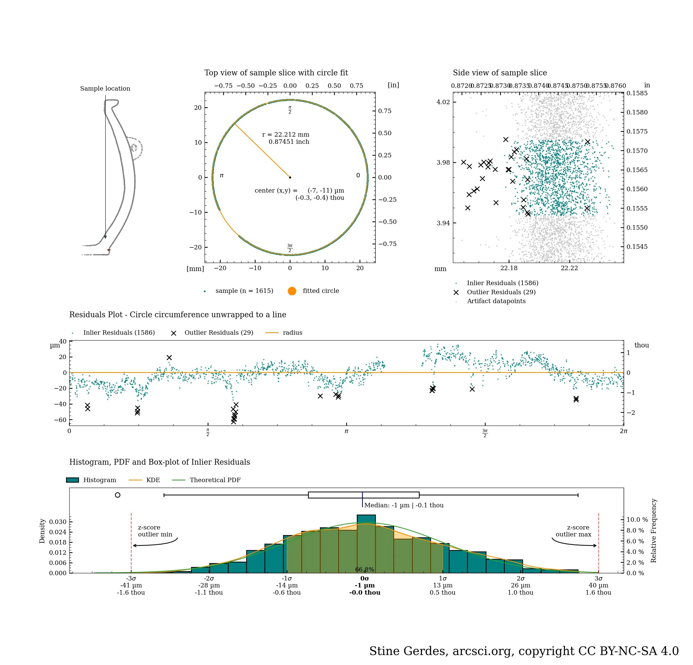
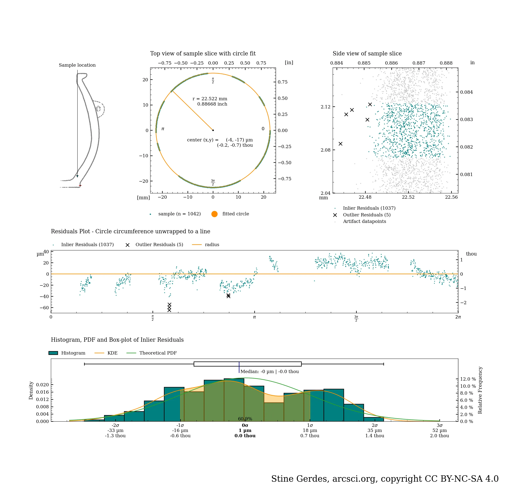
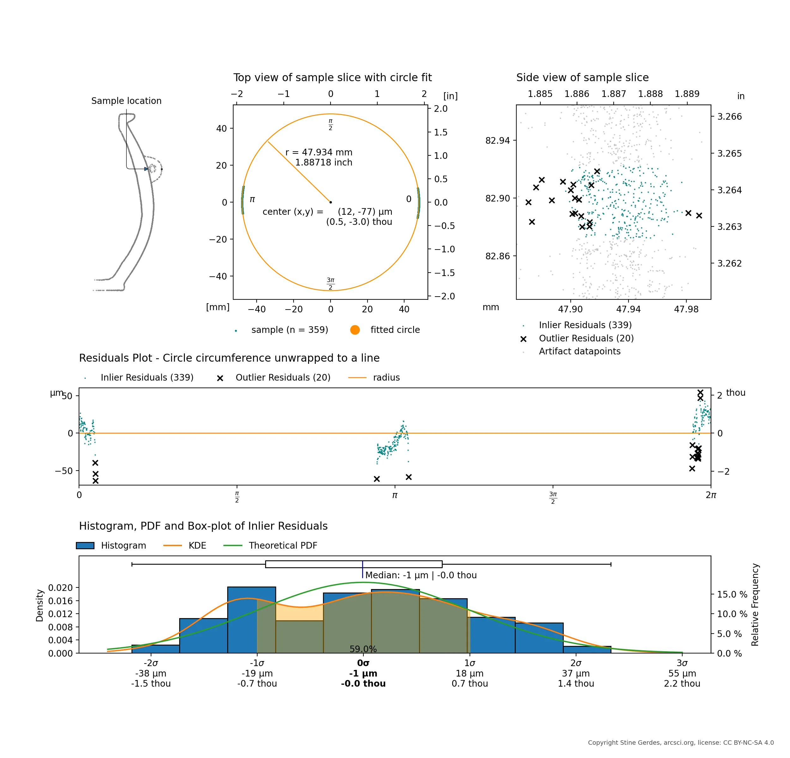
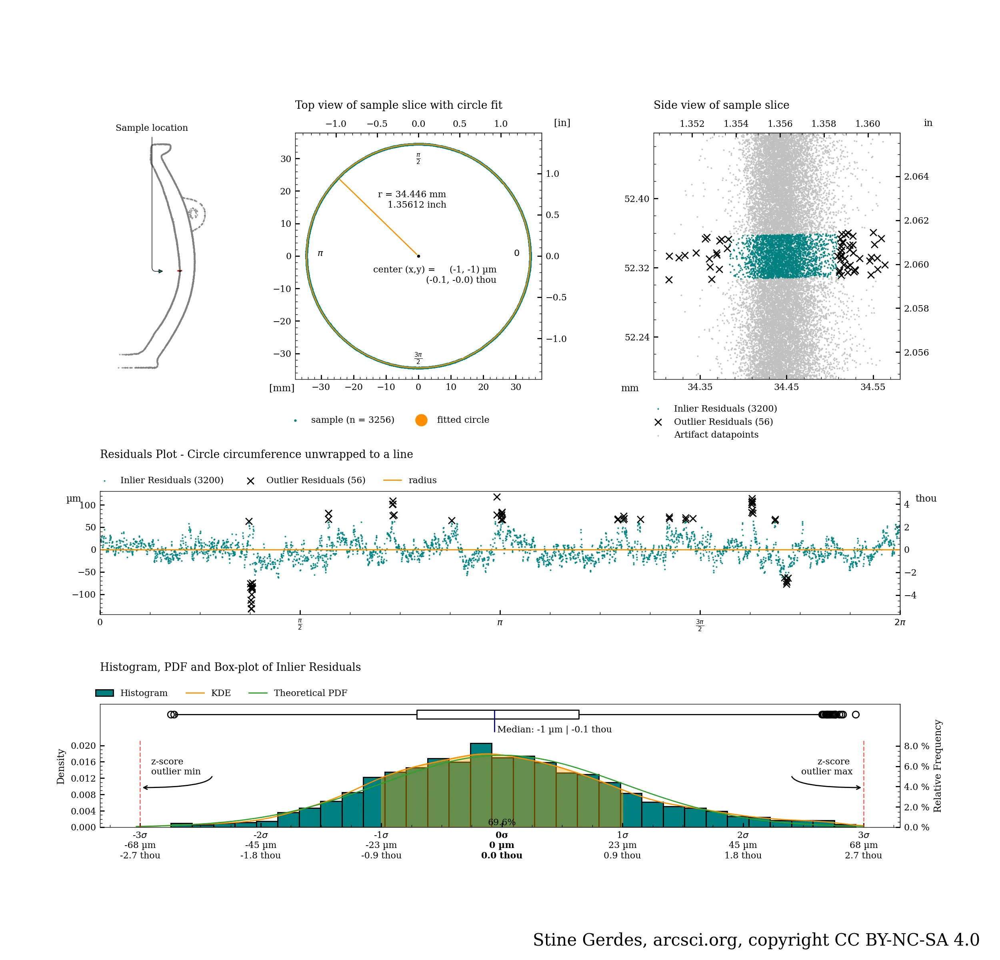
{kind=link}